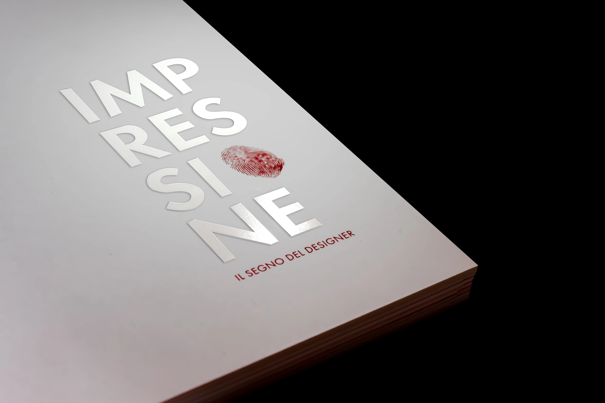
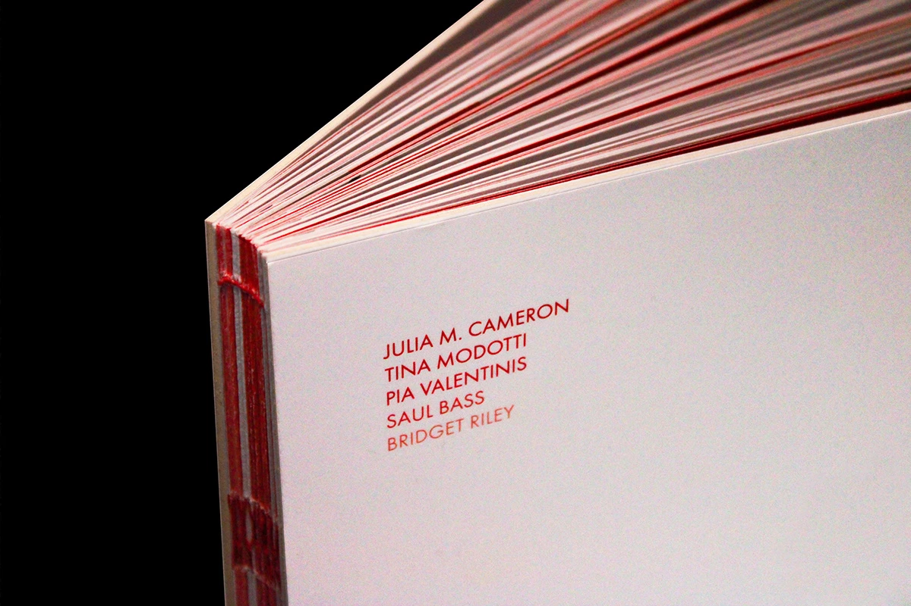
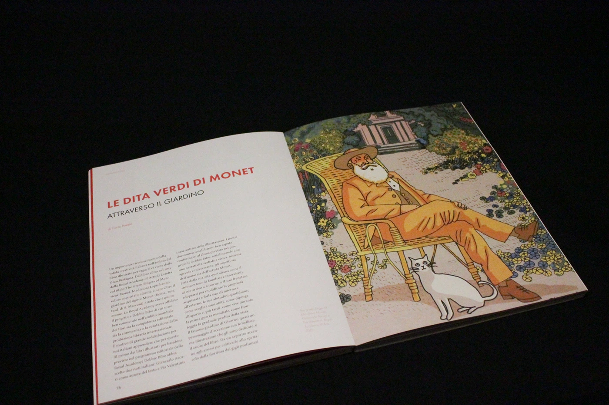
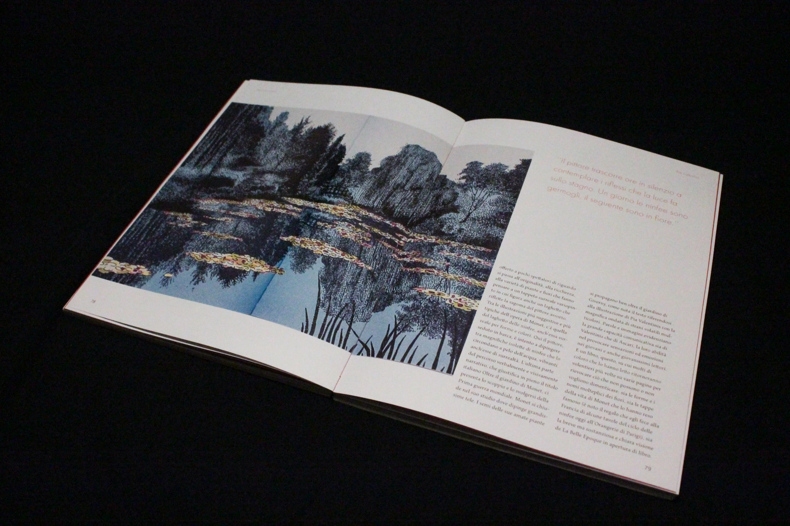
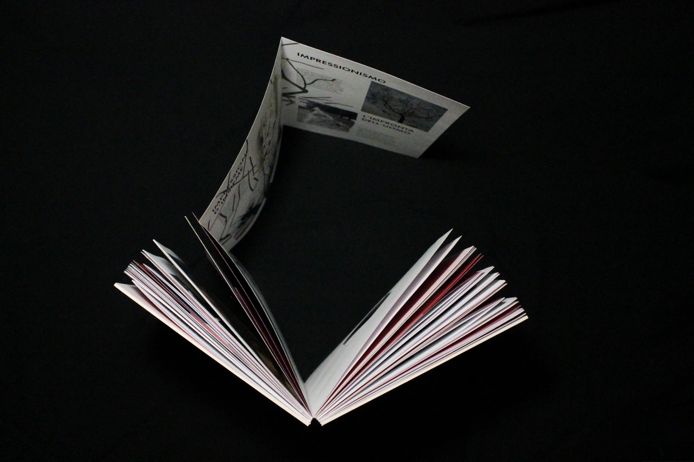

→COVER

On the cover the title is printed in white ink on a white background covered with a soft touch film. It reinforces the idea of impression by playing on sensoriality. The footprint, replacing the O, symbolically translates the subtitle.
→ SECTIONS

Impressione is structured into five sections, each exploring a unique nuance of the term through a dedicated shade of red. This tonal gradation is reflected in the cover typography and the exposed Bodonian stitching. The layout features a 6-column grid with text set in Maiola and Futura PT, printed on 120g Arcoset paper with a soft-touch finish cover.
→PIA VALENTINIS



The secion ‘Impressionism’ is about Pia Valentinis’ illustration works.